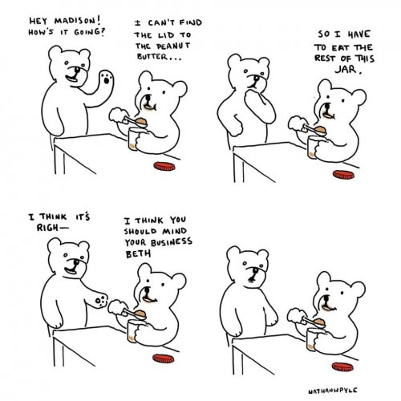

--Agnes Bookbinder
"Whatever you’re given can wake you up or put you to sleep."
–Pema Chödrön
Yesterday I broke my own rule and gave a dance friend advice she hadn’t asked for.
Yep, it went about as well as you’d imagine.
My friend had posted her anxiety that it’s going to be a long time until we can return to dancing.
Let’s face it, most likely she’s right. I mean, only a few disbelievers are going to rush out to get their faces within inches of other folks, sweating and breathing heavy all over them, in enclosed places for hours, just for fun. (Last fall, a couple hundred rebels did just that, many got sick, and 12 died.)
Of course it's not just dancing where incomes, connections, venues, arts, and activities disappeared. Worldwide, folks are isolated, lonely, lacking so much, afraid for the future and wishing things were otherwise.
Really, just like always.
So yes anxiety has been all over social media feeds.
And till now I’ve done pretty well with keeping my personal take on this to myself, since people have a right to find their own way without my two cents.
This time though, like a couple of other times, apparently the gods had had enough and Judy’s fingers began to type.
Because the thing is, I work with a lot of anxious and depressed people. Every day.
More than that, I haven’t struggled in this pandemic. In fact, I’ve kind of liked it (she says, ducking for cover.)
That’s not to say I don’t miss dancing and hugging and the unconcerned, unthinking normalcy of my former everyday life. I would happily have all that back in a heartbeat.
But it’s not coming back soon, and when it returns, most likely much will be different.
Which means I get the chance to watch these times we’re living in become an actual day-to-day example,
a kind of primer, if you will,
of how woo-woo nonduality actually intersects with that which we’ve all agreed to call, “real life,”
Actually integrates. Actually gets lived.
Rubber hitting the road.
As opposed to intellectually being just very nice in concept.
I mean, there are always a zillion such opportunities. But just by being so widespread,
the pandemic offers spiritual types the opportunity to walk their talk.
Because quite truly, THIS IS IT.
Don’t like it? Still IT. Wish things were otherwise? Still IT. Want to hug your grandkids, get your job back, not worry about being alive tomorrow?
Yeah.
We can yearn and regret and cry and try to control forces way bigger than we.
And life continues to be what it is and it ain’t changing just because we don’t want it.
This is not theory. Not conceptual. Not intellectual.
It's just existence. As it is. Which includes death and poverty and fear and loneliness and not knowing what to do and not getting what we want.
Fighting that feels awful. Fighting for control we don’t have, fighting to make things our way when we have zero power, brings anxiety. Screaming “But I don’t want it this way!” causes suffering.
Ours.
Not to mention that we don’t know everything, or see everything. We only know our own tiny little filtered viewpoint. There is so much that never enters our screen.
How do we fix what we don’t even know about?
Thinking our limited experience on this planet ever provides enough of the big picture to actually fix existence, makes humans crazy.
Because, don’t know. Because, believe lies. Because, confirmation bias. Because, arrogance, know-it-all-while-knowing-nothing, insignificance.
Because This Is It.
So we might find it easier to adapt. We might find it easier to yield.
In fact, we might find it easier,
even revelatory,
to BE existence,
rather than see ourselves as outside it, evaluating, directing, and fighting life.
Being experience, being life, being fear, being others, being advice, being rule-breaking, being reaction.
As opposed to the one experiencing and witnessing and evaluating all that.
This brings conceptual nonduality to a screetching "real-life" integration.
This, is truly, “only one.”
Yeah yeah fine, but who cares? Especially when there are "real" problems and worries.
Well of course no one has to care.
But if we're really tired of anxiety and suffering, it could be that even just considering this shift in viewpoint,
even when it feels like we’re not doing it “right,”
can help anxiety fade away.
On its own.
Even if circumstances do or don't change.
Because BEING what is
IS
what is.
And that
turns out to BE
everything.
to get your Mind-Tickled every week.
"You are convinced that if
You can but manage...
Your mind
Your money
Your breath
Your energy
Your body
Your faith
Your relationships
Your prayers
You will unlock the door
To peace, happiness and contentment.
Guess again."
--Ram Tzu
